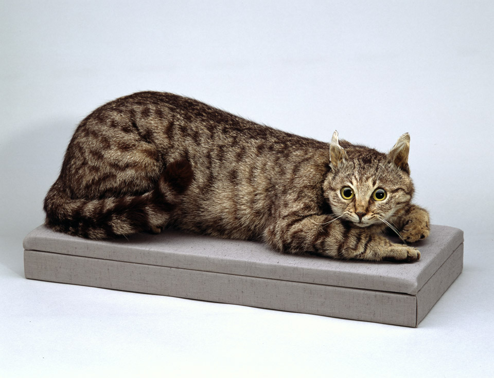

import requests
# Global variables
endpoint_url = 'https://wikibase.wbworkshop.tibwiki.io'
resource_url = '/w/api.php'
entity = input("What's the Q number (including the 'Q')? ")
print('Check out ' + endpoint_url + '/wiki/' + entity + ' to see the GUI.')
resourceUrl = '/w/api.php?action=wbgetclaims&format=json&entity='+entity
uri = endpoint_url + resourceUrl
r = requests.get(uri)
data = r.json()
claims = data['claims']
print('subject: ', entity)
print()
for property, values in claims.items():
print('property: ', property)
for value in values:
try:
# print Q ID if the value is an item
print('item value: ', value['mainsnak']['datavalue']['value']['id'])
except:
try:
# print the string value if the value is a literal
print('literal value: ', value['mainsnak']['datavalue']['value'])
except:
# print the whole snak if the value is something else
print('other value: ', value['mainsnak'])
print()5 Jupyter Notebook with linked open data
5.1 Linked open data
This notebook experiments with querying linked open data in a Jupyter Notebook rendered through Quarto.
The Python code below queries the NFDI4Culture Wikibase at https://wikibase.wbworkshop.tibwiki.io/wiki/Main_Page and returns data based on the ID inputted by the user.
This executes in Jupyter Notebook which is able to run the Python code and provides a static output when saved in the Notebook. It cannot be executed dynamically in Quarto since the Quarto front-end does not support stdin input requests.
To reset the output, run ‘Kernel > Restart kernel and clear all outputs’.
5.2 Wikibase API testing
5.3 Query
The below Python code experiments with using SPARQLWrapper to retrieve data based on a SPARQL query. Not working with NFDI4Culture Wikibase since I don’t know the SPARQL endpoint URL.
from SPARQLWrapper import SPARQLWrapper, JSON
from PIL import Image
import requests
def get_delay(date):
try:
date = datetime.datetime.strptime(date, '%a, %d %b %Y %H:%M:%S GMT')
timeout = int((date - datetime.datetime.now()).total_seconds())
except ValueError:
timeout = int(date)
return timeout
def get_image(url, headers):
r = requests.get(url, headers=headers, stream=True)
if r.status_code == 200:
im = Image.open(r.raw)
return im
if r.status_code == 500:
return None
if r.status_code == 403:
return None
if r.status_code == 429:
timeout = get_delay(r.headers['retry-after'])
print('Timeout {} m {} s'.format(timeout // 60, timeout % 60))
time.sleep(timeout)
get_image(url, headers)
# Specify the NFDI4Culture Wikibase SPARQL endpoint (CURRENTLY UNKNOWN)
#url = 'https://query.wbworkshop.tibwiki.io'
# Temporarily using the Wikidata SPARQL endpoint
url = 'https://query.wikidata.org/bigdata/namespace/wdq/sparql'
user_agent = 'cp4c_bot/0.0 (https://github.com/SimonXIX/cp4c; ad7588@coventry.ac.uk)'
sparql = SPARQLWrapper(url, agent=user_agent)
# Query
# sparql.setQuery("""
# SELECT ?item ?itemLabel ?creationDateStart ?creationDateEnd ?inscription ?materialLabel ?methodLabel ?description ?media
# WHERE {
# ?item tibt:P25 tib:Q60.
# ?item tibt:P79 ?creationDateStart.
# ?item tibt:P80 ?creationDateEnd.
# ?item tibt:P18 ?inscription.
# ?item tibt:P38 ?material.
# ?item tibt:P39 ?method.
# ?item tibt:P26 ?description.
# ?item tibt:P16 ?media
# SERVICE wikibase:label { bd:serviceParam wikibase:language "[AUTO_LANGUAGE],en". }
# }
# #All paintings from "Belagerungsszenen des Langen Türkenkriegs"
# """)
sparql.setQuery("""
#Cats, with pictures
#defaultView:ImageGrid
SELECT ?item ?itemLabel ?pic
WHERE
{
?item wdt:P31 wd:Q146 .
?item wdt:P18 ?pic
SERVICE wikibase:label { bd:serviceParam wikibase:language "[AUTO_LANGUAGE],en" }
}
LIMIT 2
""")
# Convert results to JSON format
sparql.setReturnFormat(JSON)
result = sparql.query().convert()
for item in result['results']['bindings']:
image_url=item['pic']['value']
headers = {'User-Agent': 'cp4c_bot/0.0 (https://github.com/SimonXIX/cp4c; ad7588@coventry.ac.uk)'}
im = get_image(image_url, headers)
print('Cat name: ', item['itemLabel']['value'])
display(im)Cat name: Toffee
Cat name: Crimean Tom
5.4 Image - Siege III: The Fortress of Raab occupied by the Turks, 1594. Painting, https://wikibase.wbworkshop.tibwiki.io/wiki/Item:Q505
The below Python code experiments with retrieving data from Wikibase using the API. This takes approx. 18 seconds to run due to the size of the images.
from PIL import Image
import requests
# Global variables
endpoint_url = 'https://wikibase.wbworkshop.tibwiki.io'
resource_url = '/w/api.php'
entity_id = 'Q505'
def get_entity (entity_id):
resourceUrl = '/w/api.php?action=wbgetentities&format=json&ids='+entity_id
uri = endpoint_url + resourceUrl
r = requests.get(uri)
data = r.json()
return data
media_data = get_entity(entity_id)
claims = media_data['entities'][entity_id]['claims']
for property, values in claims.items():
if property == 'P22':
for value in values:
image_url = value['mainsnak']['datavalue']['value']
im = Image.open(requests.get(image_url, stream=True).raw)
elif property == 'P23':
for value in values:
entity_id = value['mainsnak']['datavalue']['value']['id']
object_data = get_entity(entity_id)
print('English title: ', object_data['entities'][entity_id]['labels']['en']['value'])
display(im)English title: Siege III: The Fortress of Raab occupied by the Turks, 1594